Difensori
3 Miguel Gutiérrez (TS)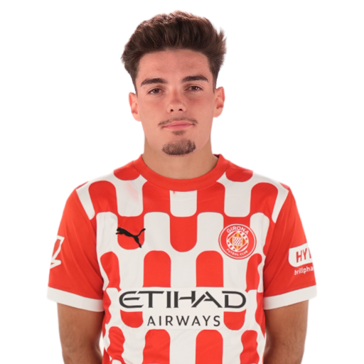
4 Arnau Martínez (TD)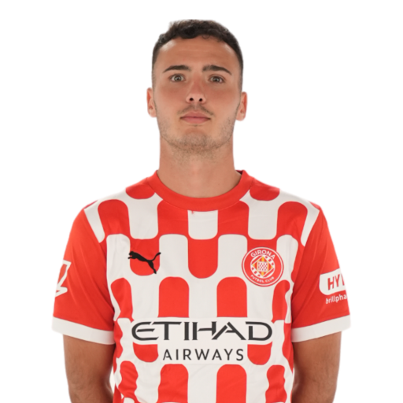
5 David López (DC)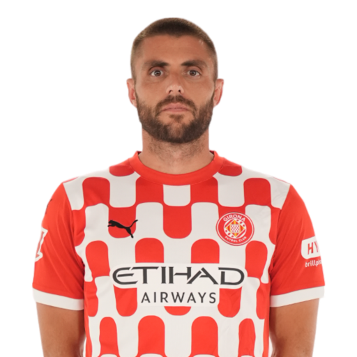
15 Juanpe (DC)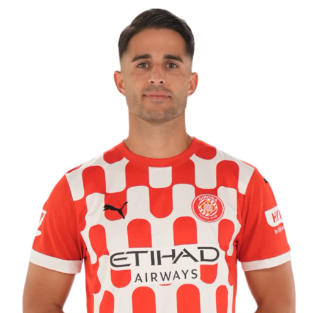
16 Alejandro Francés (DC)
17 Daley Blind (DC)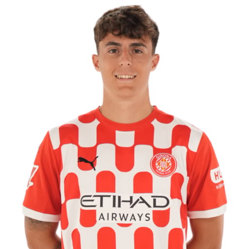
18 Ladislav Krejci (DC)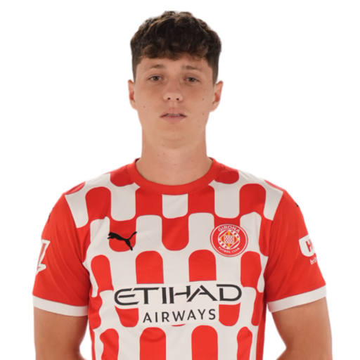
Centrocampisti
6 Donny van de Beek (CC)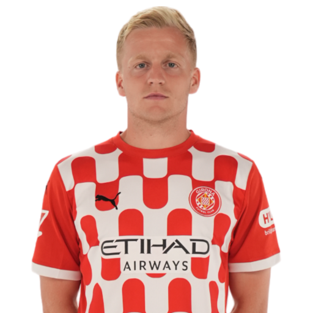
14 Oriol Romeu (CC)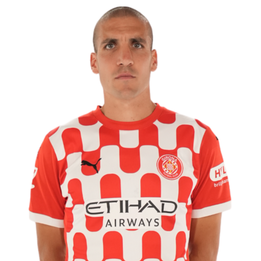
21 Yangel Herrera (CC)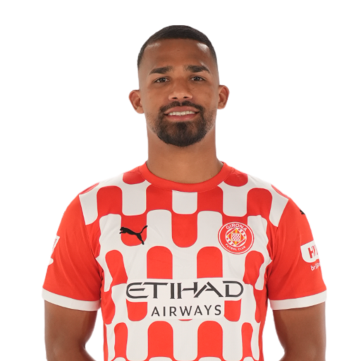
22 Jhon Solís (CC)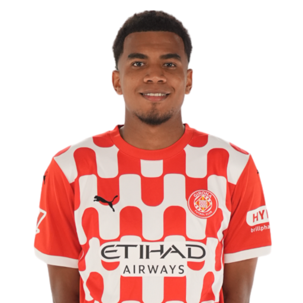
23 Iván Martín (TQ)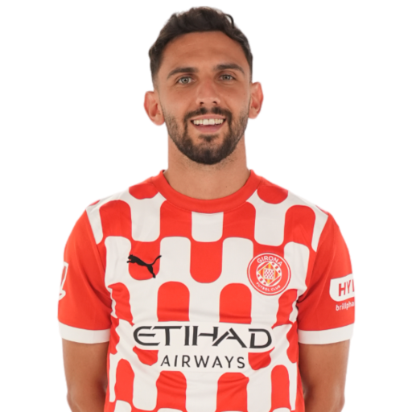
27 Gabriel Misehouy (TQ)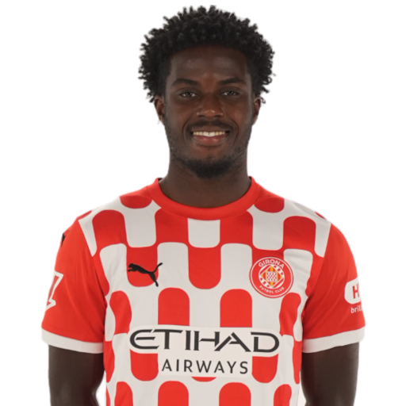
Attaccanti
7 Cristhian Stuani (AT)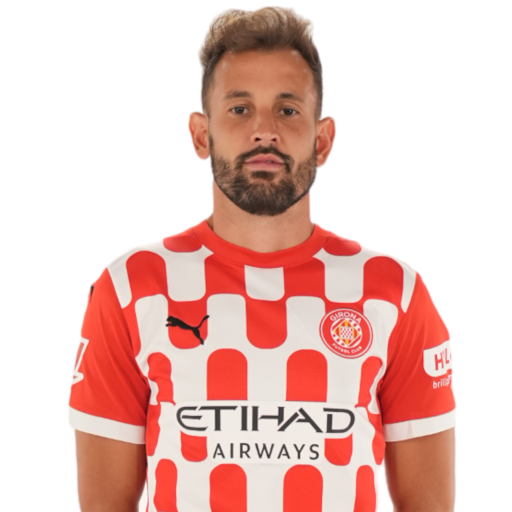
8 Viktor Tsygankov (AD)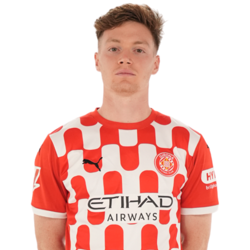
9 Abel Ruiz (AT)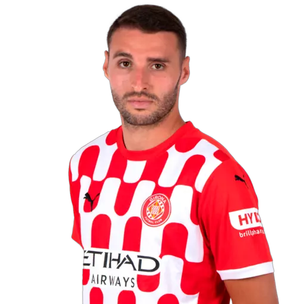
10 Yaser Asprilla (AD)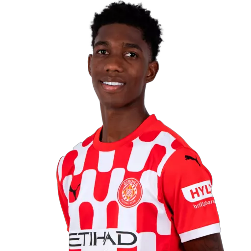
11 Arnaut Danjuma (AS)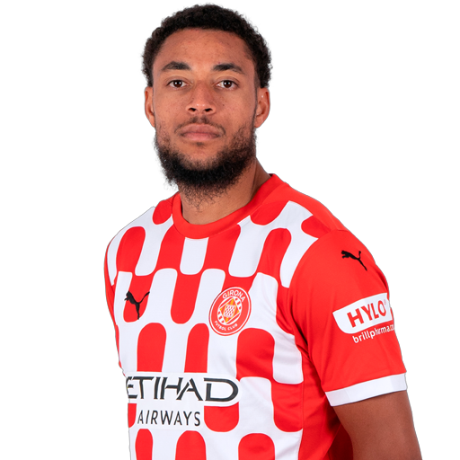
19 Bojan Miovski (AT)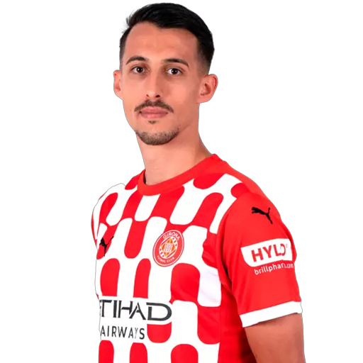
20 Bryan Gil (AS)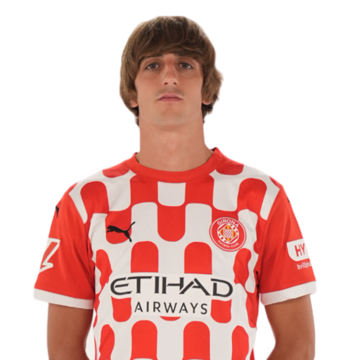
24 Portu (AD)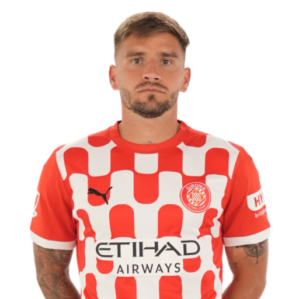
 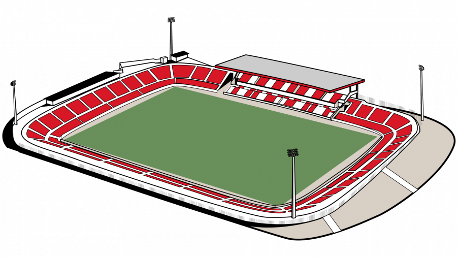
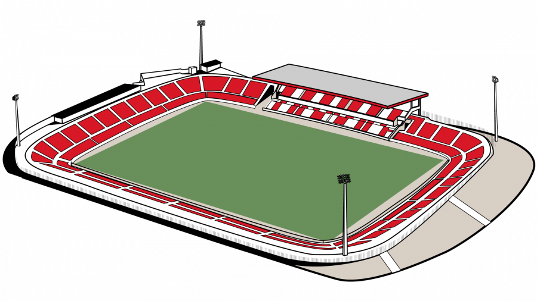